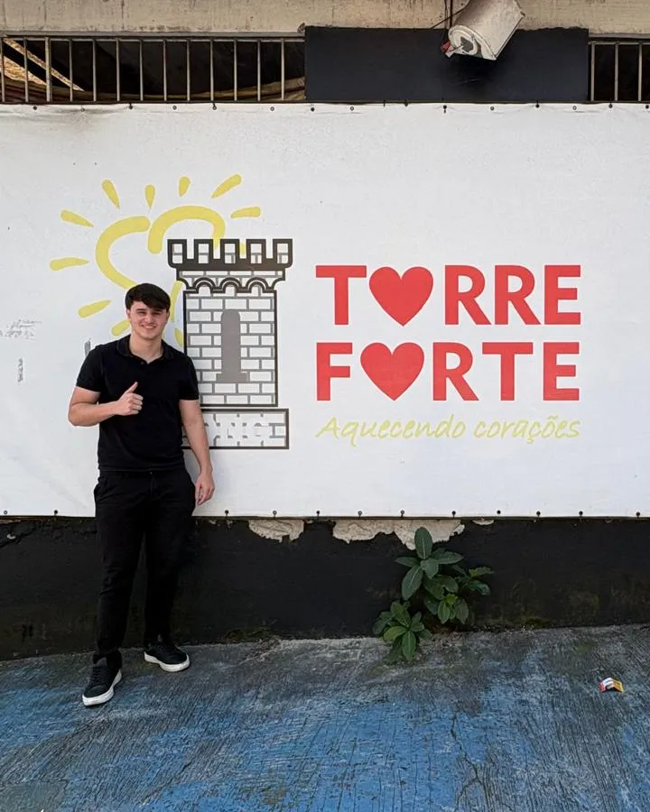
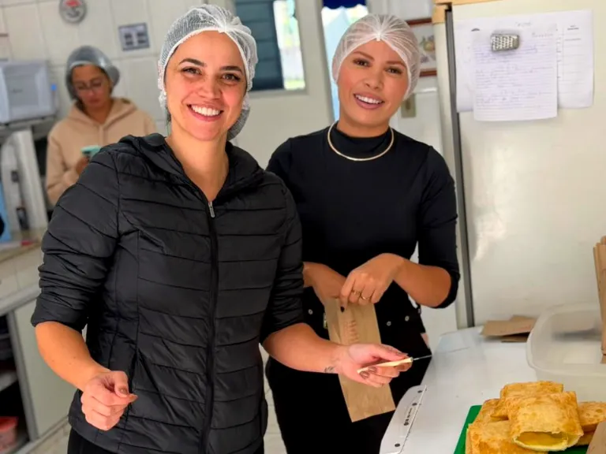
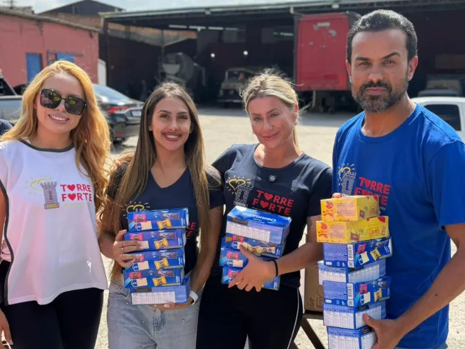
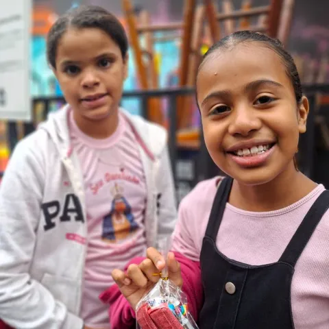
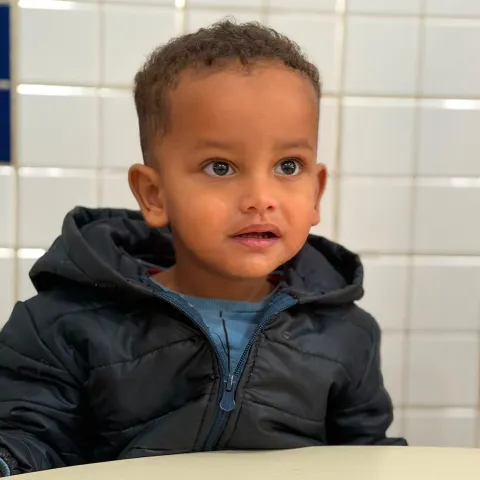
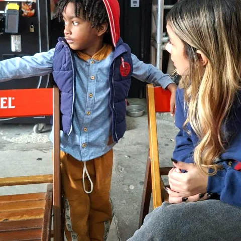

ONG em Santo André (SP)
Ajudar crianças hoje para que elas transformem outras vidas amanhã.
A Torre Forte apoia centenas de crianças, principalmente de 3 a 15 anos, e suas famílias em comunidades do ABC Paulista, com alimentação, acolhimento, esporte e música.

Como ajudar
Três jeitos de fazer parte
Cada forma de ajuda faz diferença para as crianças e famílias que a Torre Forte acompanha.
-
Doe
Contribua pelo Pix e ajude a manter os projetos que alimentam, acolhem e ensinam crianças do ABC.
Faça uma doação -
Seja voluntário
Doe seu tempo e seus talentos nas ações e nos projetos da Torre Forte.
Seja voluntário -
Seja uma empresa parceira
Sua empresa ou comércio pode apoiar os projetos e mobilizar mais gente pela causa.
Seja uma empresa parceira
Quem somos
Uma torre de cuidado no ABC
A Torre Forte nasceu do desejo de Rodolfo Donetti de transformar vidas por meio da solidariedade. Como policial militar, ele conheceu de perto as dificuldades de crianças de comunidades vulneráveis e, em 2009, deu início ao projeto social que se tornou a ONG.
Hoje, a organização sem fins lucrativos apoia crianças e famílias de comunidades de Santo André com alimentação, acolhimento, esporte e música.
Conheça nossa história
Projetos
Cinco projetos, um mesmo cuidado
Alimentação, esporte, música e solidariedade para crianças e famílias do ABC Paulista.
-

Alimentação
Pastel Solidário
Alimento, carinho e alegria para crianças e famílias do ABC, no último sábado de cada mês.
Conhecer o projeto Pastel Solidário -
Esporte
Jiu-jítsu Solidário
O esporte como ferramenta de desenvolvimento, convivência e inclusão social.
Conhecer o projeto Jiu-jítsu Solidário -
Música
Aulas de música
Expressão, criatividade e acesso à cultura para crianças descobrirem novos talentos.
Conhecer o projeto Aulas de música -

Solidariedade
Campanhas solidárias
Arrecadação de alimentos e materiais com parceiros como o Liceu Jardim e o Lacre Solidário.
Conhecer o projeto Campanhas solidárias -

Comunidade
Ações comunitárias
Acolhimento e cuidado com as famílias em datas especiais.
Conhecer o projeto Ações comunitárias
Nosso impacto
Centenas de crianças acompanhadas
- 3 a 15 anos é a idade da maioria das crianças que a Torre Forte atende.
- +300kg de alimentos arrecadados em uma única campanha solidária.
- ≈50 pacotes de fraldas recebidos em uma campanha.
- ≈20 pessoas entre colaboradores e voluntários.
Resultados de campanhas relatados pela ONG Torre Forte.
O ciclo da solidariedade
Ajudar hoje para transformar amanhã
É o que move a Torre Forte: cuidar das crianças hoje para que elas possam transformar outras vidas amanhã.
-
Hoje, ajudamos
Alimentação, acolhimento, esporte e música para crianças de comunidades do ABC.
-
Elas crescem
Com apoio e oportunidades, as crianças aprendem e desenvolvem novas habilidades.
-
E transformam outras vidas
Crianças acolhidas hoje podem se tornar adultos que transformam a vida de outras pessoas, num ciclo contínuo de solidariedade.
Galeria
Momentos de verdade
Fotos reais das ações e dos projetos da Torre Forte.
-

-

-

-
Aquecendo corações
Sua ajuda vira alimento, esporte e música
Doe pelo Pix, seja voluntário ou traga sua empresa para perto. Juntos, a gente aquece mais corações.
Aquecendo corações